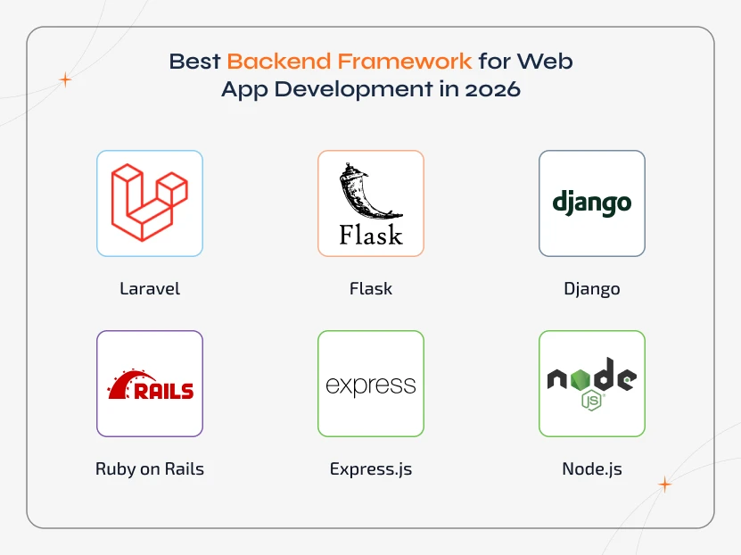

When we talk about digital presence, the first thing we all think about is searching for the related business website we hear about. As a strong digital presence is becoming mandatory for organizations to gain a better brand reputation and make their target audience aware of their business presence, the right choice of web technology is critical. A best backend framework is essential for building an application on which end users can communicate and perform certain actions.
The frontend knowledge relies on the backend, including company logic, user demand processing, database relations, and implementation. Most companies are reaping the benefits of powerful backend frameworks to deliver a high-quality application with a great user experience. When dealing with front-end development, we all start with the browser and its benefits.
However, backend development is a mysterious area. Backend programs perform the functions of your sites using a database running on your server. In web development, web frameworks are of great help as a crucial part of developing robust and interactive web applications for both frontend and backend. They help to create the necessary online platforms by solving many intricacies of technologies.
Since the backend framework plays an important role in your web app development, you need to choose one wisely. With so many choices available in backend frameworks, finding the right one that ensures great scalability and performance can be hard to crack.
A backend developer must possess many necessary skills. Understanding backend frameworks is one of them. There are many backend frameworks and this blog will discuss the best backend frameworks in use today.
A backend framework also called a server-side framework is a set of tools and modules that help create the architecture of a website. It can significantly affect the performance of a web app and decide the success of your project. Backend frameworks mainly help make tasks convenient and efficient, and developers are hassle-free to work on.
These backend frameworks mainly focus on working scripting languages like Ruby and JavaScript or compiled languages like Java and C. A good backend framework helps developers get off to a great start by reducing the need to create and configure everything from scratch. These frameworks kick off the hassle out of the web app development process.
The backend part is responsible for internal operations and the backend framework mainly aims to automate the output associated with software development activities.
Here is a list of benefits of using backend frameworks for web development.
- Security
- Community Support
- Consistency
- Modularity
- Time-Saving
The backend Web app development process fully relies on fetching, linking, and reflecting data, which must be secured. Backend frameworks offer security in several ways by implementing data encryption, validation, and user authentication.
A good web app framework can streamline the development process and help build a robust quality app that can withstand external issues, poor performance, and other performance-affecting factors.
Most of the backend frameworks are open source and there is a large community of developers who are always active in helping other developers who are having problems and contribute to improving this framework, along with community support.
The best thing about backend frameworks is that they follow a consistent format for organizing code, which enables developers to maintain code consistency, which helps analyze code, fix bugs, and facilitate code collaboration.
With code consistency, backend frameworks allow developers to break down complex application code into chunks and manageable modules, making it seamless for developers to implicitly modify the app or add new features. This feature is very useful, especially when it comes to enterprise app development.
A good web app framework comes with pre-built components and libraries that enable developers to quickly code applications regardless of development complexities. That means it saves time and effort.
Picking up the right backend framework will decide how fast your application ships, how well it scales, and how smoothly it performs. Before selecting a backend framework, here’s what you should look for.
Performance & Scalability
Choose a framework that can manage high traffic, deliver fast responses, and grow with your user base with zero guesswork.
Learning Curve & Developer Experience
Analyse the environment and opt for a framework that actually fits your team’s skills. A smooth learning curve, clear documents, and robust community support ensure quick development.
Security Features
Backend is the core of your application, so make sure the framework you choose offers built-in security tools, validation, and protection against cybersecurity attacks.
Ecosystem & Integrations
A flexible and reliable framework comes with plugins, libraries, and quick integration options, so you don’t need to spend extra time doing repetitive tasks.
Long-Term Maintenance
Inspect if the framework is actively updated, wisely used, and backed by a robust community or company. This ensures stability and reliability for years ahead.

Laravel is a leading PHP development framework known for its clean and beautiful PHP code. It simplifies the production procedure in specific tasks such as routing, authentication, queues, and containerization. It is based on MVC architecture.
Laravel's backend comes with a migration method for database query manipulation. It is a beginner-friendly framework with a user-friendly interface, comprehensive library, and incredible API aid. Laravel PHP framework is appropriate for developing small and large applications with complicated backend needs.
Laravel is preferred by most PHP development service providers. Using Laravel streamlines backend development when making modern secure web applications. This is specifically true if you are performing non-trivial applications.
- Supports MVC Architecture
- Programming Task Management & Configuration
- Blade Template
- Easy Installation
- Attractive Security features
- Artisan Console
- Simple API
- Easy Authentication
- Better Testing
- Logs
- Cache Backends
Flask, a lightweight Python micro-framework, is crucial for executing web applications on embedded devices. It offers extensive documentation and Unicode-based support to reduce tasks for project architects and developers.
Flask's RESTful request dispatch feature provides interoperability across networks. It is a simple, highly flexible, and performant web framework. Being a lightweight framework or micro framework, Flask is easy to learn and understand. Also, it is very user-friendly.
Moreover, there is no database abstraction layer, document verification, or external source dependencies. It is considered a micro framework because it avoids the use of special tools and libraries. You can modify the current state of the Flask framework using code extension to add the features you want.
- Secure Cookies
- Request Dispatching
- Unicode support
- Development server & debugger
- Jinja2 templates
- WSGI compliance
- Flexible
- Scalable
- Easy to Learn
- Quicker Implementation
Django is an open-source framework, with Python as the best backend framework, enabling rapid web development and clean, practical design. This free and open-source framework is fast. The Django backend framework ensures security and helps you defend yourself against many common security exploits.
It is also a very secure framework. Django is very user-friendly and uncomplicated to understand. It is one of the most popular full-stack frameworks and provides a lot of functionality like REST API support. Most websites take advantage of Django's backend capability to easily scale.
It responds to new problems. With this framework, you can build different applications including content management and social networking sites. You can rework applications developed by the Django framework with the tiniest additions, changes, and costs.
- Views layers
- Security
- Template layers
- Model layers
- Python Compatibility
- Localization, performance & optimization
- SEO-oriented
- Speedy Development
- Larger Community Support
- Versatile Use Cases
Are you looking for a multi-component backend framework for developing iOS or Android applications? Then Ruby on Rails is an ideal choice to consider. Ruby on Rails, also known as Rails, is a server-side framework based on the MVC architecture.
It is a beginner-friendly framework that is effortless to comprehend and understand. It is an incredibly versatile best backend framework for web and mobile application development. This framework is rapidly evolving and includes large. However, its pros and cons are still debated, but it is loved by backend developers worldwide because of its user-friendliness.
Ruby on Rails application development frees developers from the mundane side of coding and frees them to focus on core business logic. It increases productivity and helps developers in delivering apps much faster.
- Short & simple code
- Active Record
- Convention over configuration
- Automated Deployment
- Simple Testing tool
- Interpreted scripting language
- Support of Diverse Applications
- Strong Community
- Fast Development
- Adherence to Coding Standards
Express.js is a JavaScript framework that offers new backend functionality as it allows developers to develop an application using JavaScript on the backend for the first time. This weightless framework gives developers express API and built-in web app parts.
Built on Node JS, Express acts as the middleware for managing your routes and servers. JavaScript is the most popular programming language in the world. With the advent of Node.js, the popularity of JavaScript has grown rapidly in the backend development community, and over the past decade, Node.js has become one of the top names.
The Express API enables users to configure routes for sending and receiving requests between the database and the front end. Supports many template engines and packages like Express framework, Mustache, Pug, EJS, and more. Its superior scalability enables you to build enterprise-sized apps with high-level performance.
- Fully customizable
- The standard for NodeJS web middleware
- Low Learning Curve
- Fast app development
- Open-source community
- Easy integration of third-party services & middleware
- Fast Scalability
- Less Maintenance Cost
- Community Support
- Google v8 Engine Support
- Same Language support for front and backend
NodeJS is the best choice for backend development due to its vast and versatile features. NodeJS is an event-driven JavaScript runtime built on Chrome's V8 engine used to build scalable backend APIs.
It is open source and follows a "single-threaded" runtime environment, meaning it handles multiple clients simultaneously. NodeJS offers speed in client-server communication and data processing.
NodeJS follows two concepts: non-blocking I/O, which means that NodeJS works on multiple requests at a time on the client side, and the other does not block any input request while responding. Second is asynchronous, when we get another proposal, we resolve it and make it available for another request.
- Data Streaming
- Real-Time Apps
- Microservice Architecture
- REST APIs
- Single Page Applications
- Fast Delivery
- Cross-platform Support
- Community Support
- Scalability
- Ease of Adoption
We can say it's a tie match because JavaScript and Python are leading the market due to their exceptional features, outstanding performance, fast development possibilities, and rich functionalities. Now you have caught the six best backend frameworks for web app development, choose the one that best suits your web project and meets your requirements efficiently.
Be sure to choose a web app framework that you can manage for at least five years with future business development in mind. Last but not least, consulting web technology experts is always beneficial.
Lead Project Manager
Sivabharathy is a technical architect, technology enthusiast, and voracious reader. His visionary perspective has earned him opportunities to work with innovative projects in the computer software industry. He is an expert in PHP, JavaScript, NodeJS, Angular, Ethereum, Web3, Product Development, and Teamwork.